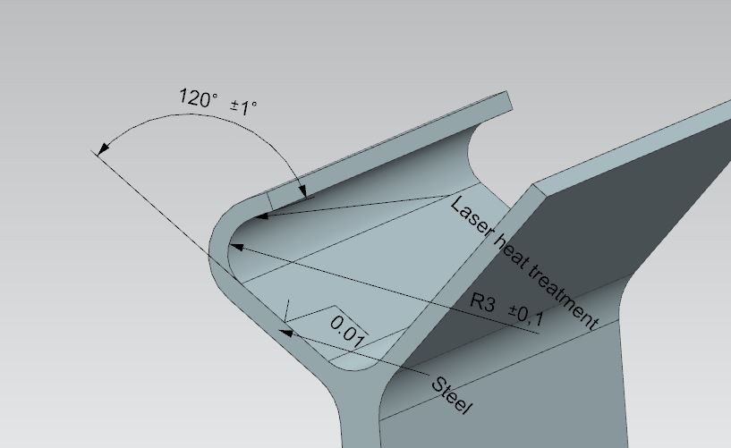

Spaltprofilieren und Spaltbiegen
Modellierungsfeature
Idee
Im Zentrum des Sonderforschungsbereich 666 Integrale Blechbauweisen höherer Verzweigungsordnung standen die Fertigungsverfahren des Spaltprofilierens und Spaltbiegens. Für die Konstruktion von Blechbauteilen im CAD System Siemens NX sind hierfür im Rahmen des „Direct Modeling“ Ansatzes Designfeatures entwickelt worden.
Spaltprofilieren
Spaltbiegen
Durch die Implementierung der Features lassen sich diese genauso einfach wie andere Konstruktionselemente, wie z.B. Fasen oder Nuten, verwenden. Die Basis der Features bildet ein mathematisches Modell, welches auf den geometrischen Zusammenhängen des Profilquerschnitts unter der Annahme eines konstanten Volumens basiert.
Nichtlineares Spaltprofilieren
Als Teil meiner Tätigkeit als Hilfswissenschaftlicher Mitarbeiter habe ich unter anderem das Feature für das Spaltprofilieren weitestgehend neu entwickelt, um auch das nichtlineare Spaltprofilieren darstellen zu können. Basis für die Entwicklung des Features war zunächst die Definition eines „User Defined Features“ (UDF). Um die Anzahl der auszuwählenden Referenzen und definierenden Parameter zu minimieren bzw. logischer zu gestalten erfolgt das Erstellen und Bearbeiten der UDFs über NX Open. Durch die Kombination der UDFs mit NX Open lässt sich die Anwendung nicht mehr von Standardfeatures unterscheiden.
Lineares Spaltprofilieren
Nichtlineares Spaltprofilieren
Mit der Version NX 11.0.0 ist die Definition von „Custom Features“ möglich. Diese bieten deutlich mehr Freiheitsgrade bei der Implementierung eines Features. Durch die rein programmatische Lösung lassen sich z.B. auch sehr kleine Spalttiefen darstellen, bei denen eine rein analytische Lösung nicht mehr möglich ist, ohne den Aufwand für die Implementierung überproportional zu erhöhen.
Nichtlineares Spaltbiegen
Analog zum Spaltprofilieren habe ich ein „Custom Feature“ für das nichtlineare Spaltbiegen implementiert. Das Feature entsteht aus der aus der Anwendung von 28 Standardfeatures und unter der Zuhilfenahme des Parasolid Kernels.
Lineares Spaltbiegen
Nichtlienares Spaltbiegen
Biegen und PMI integration
Die integrale Blechbauweise höherer Verzweigungsordnung kennzeichnet im Besonderen da vorhanden sein mehrerer Biegelinien. Dies ist in NX nicht direkt vorgesehen. Für die Konstruktion von Blechbauteilen mittels Standardfeatures z.B. Biegen werden die Biegelinien bzw. Mittelflächen herangezogen. Um Biegeoperation an den Flanschen linearer Spaltprofile habe ich, auf Basis des Standardfeatures, ein Feature speziell für diesen Fall implementiert.
Gegenüber dem Standardfeature verfügt das implementierte Feature über die Möglichkeit die Abmaße direkt an der Geometrie zu in Form von „Product Manufacturing Information“ (PMI) zu visualisieren.
Renderings
Hier sind einige der Renderings zu finden die mit Keyshot während des Entwicklungsprozesses entstanden sind.